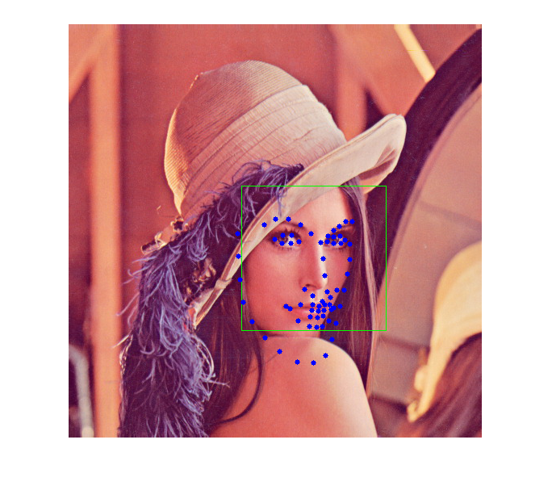

Face landmark detection in an image
Face landmark detection in an image using ensemble of regression trees.
This demo lets you detect landmarks of detected faces in an image. You can detect landmarks of all the faces found in an image and use them further in various applications like face swapping, face averaging etc.

Sources:
Contents
Options
% [INPUT] path to input image im = fullfile(mexopencv.root(),'test','lena.jpg'); % [INPUT] path to binary file storing the trained model to load modelFile = fullfile(mexopencv.root(),'test','face_landmark_model.dat'); if exist(modelFile, 'file') ~= 2 % download model from GitHub disp('Downloading model (~ 69MB)...') url = 'https://cdn.rawgit.com/opencv/opencv_3rdparty/contrib_face_alignment_20170818/face_landmark_model.dat'; urlwrite(url, modelFile); end % [INPUT] path to the cascade xml file for the face detector xmlFace = fullfile(mexopencv.root(),'test','lbpcascade_frontalface.xml'); download_classifier_xml(xmlFace); % name of user-defined face detector function faceDetectFcn = 'myFaceDetector'; assert(exist([faceDetectFcn '.m'], 'file') == 2, 'missing face detect function'); % width/height to scale images, as larger images are slower to process scale = [460 460];
Init
create instance of the face landmark detection class, and set the face detector function, then load the pre-trained model
obj = cv.FacemarkKazemi(); obj.setFaceDetector(faceDetectFcn); obj.loadModel(modelFile);
Image
load image
img = cv.imread(im);
%img = cv.resize(img, scale);Detect
detect faces in image, and get shapes of all detected faces, then draw bounding boxes around the faces and mark the landmarks
faces = obj.getFaces(img); assert(~isempty(faces), 'No faces found'); [shapes, success] = obj.fit(img, faces); if success img = cv.rectangle(img, faces, 'Color',[0 255 0]); for i=1:numel(shapes) img = cv.circle(img, shapes{i}, 3, 'Color',[0 0 255], 'Thickness','Filled'); end end imshow(img)
Helper function
function download_classifier_xml(fname) if exist(fname, 'file') ~= 2 % attempt to download trained Haar/LBP/HOG classifier from Github url = 'https://cdn.rawgit.com/opencv/opencv/3.4.0/data/'; [~, f, ext] = fileparts(fname); if strncmpi(f, 'haarcascade_', length('haarcascade_')) url = [url, 'haarcascades/']; elseif strncmpi(f, 'lbpcascade_', length('lbpcascade_')) url = [url, 'lbpcascades/']; elseif strncmpi(f, 'hogcascade_', length('hogcascade_')) url = [url, 'hogcascades/']; else error('File not found'); end urlwrite([url f ext], fname); end end % The facemark API provides the functionality to the user to use their own % face detector. The code below implements a sample face detector. This % function must be saved in its own M-function to be used by the facemark API. function faces = myFaceDetector(img) persistent obj if isempty(obj) obj = cv.CascadeClassifier(); obj.load(xmlFace); end if size(img,3) > 1 gray = cv.cvtColor(img, 'RGB2GRAY'); else gray = img; end gray = cv.equalizeHist(gray); faces = obj.detect(gray, 'ScaleFactor',1.4, 'MinNeighbors',2, ... 'ScaleImage',true, 'MinSize',[30 30]); end